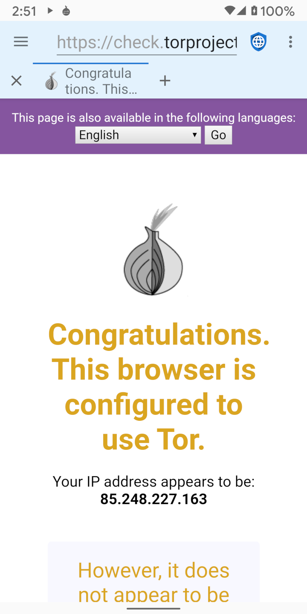

Esistono due categorie generali di cattivi soggetti che vogliono violare la privacy del web: governi maliziosi con accesso agli ISP (Internet Service Providers) e mega corporations che gestiscono social network e agenzie pubblicitarie. Proxy come TOR (The Onion Router) e I2P (Invisible Internet Project) sono utili per la protezione della privacy da governi maliziosi (che spiano il traffico in transito) ma non dalle mega corporations (che inseriscono codice malizioso sui web server).
I governi malizionsi spesso spiano i loro cittadini per punire il dissenso o le attività di difesa dei diritti umani. Solitamente, o gestiscono loro stessi gli ISP locali oppure li obbligano a rivelare informazioni mostrando tutti gli indirizzi IP visitati da ciascun utente. I proxy a strati sono progettati per sconfiggere questa violazione di privacy crittografando il traffico dal dispositivo dell'utente e instradandolo attraverso server multipli su internet prima di inviarlo alla destinazione finale. Questo significa che nessun ISP individuale, server, o sito web, può conoscere sia l'indirizzo IP del dispositivo dell'utente che l'indirizzo IP del web server finale. I governi maliziosi e gli ISP che controllano, non possono conoscere i web server ai quali l'utente sta accedendo, sebbene sappiano che l'utente sta utilizzando un servizio di proxy a strati. In alcune parti del mondo l'utilizzo di proxy può essere consideraro come evidenza di un comportamento illegale (“Se non hai nulla da nascondere non crittograferesti il tuo traffico”) e gli utenti potrebbero essere perseguiti perchè il loro governo potrebbe assumere che stiano facendo qualcosa di proibito. Per questo motivo i proxy possono essere utili ma non sono la soluzione di tutti i mali.
Quando un utente si connette a un web server, il server può vedere l'indirizzo IP dell'utente. Nonostante non sia una scienza esatta, è possibile convertire l'IP in indirizzi fisici con discreta accuratezza. I piccoli web servers solitamente si basano sull'indirizzo IP per identificare la posizione degli utenti che accedono al loro sito. I Proxy sono una buona soluzione per mascherare la posizione dell'utente a questi server. Le mega corporations proprietarie di social media e agenzie pubblicitarie utilizzano però un intero profilo di informazioni con lo scopo di tracciare gli utenti sui dispositivi e sgli indirizzi IP. Questi profili utilizzano molte tecniche diverse per l'identificazione degli utenti, tra cui JavaScript, cookie, ID traccianti, e impronta digitale dei browser. Siccome la maggior parte dei siti web carica gli annunci da una delle principali agenzie o inserisce le icone dei social media e i relativi javascript, costruiscono profili per quasi tutti gli utenti e possono tracciare la loro attività su internet anche se relativa a altri siti.
Viene tracciato ogni sito visitato, ogni acquisto effettuato, ogni carta di credito utilizzata, ogni indirizzo di spedizione, i metadati GPS di ogni immagine che viene caricata su internet. Viene costruito il profilo per età, sesso, stato civile, indirizzo, appartenenza politica, religione, situazione familiare, animali domestici, e tutto ciò su cui possono mettere le mani. Le corporations acquistano anche i database delle transazioni con carta di credito effettuate nei negozi, per poter tracciare anche le abitudini di acquisto off-line degli utenti nei loro profili. Poichè hanno già informazioni molto più accurate sull'utente rispetto a quelle fornite dall'indirizzo IP, i proxy non forniscono alcuna vera protezione della privacy contro le mega corporations.
La miglior protezione per la privacy contro le mega corporations è quella di navigare con JavaScript disabilitato, seguita dal bloccare gli annunci pubblicitari, disabilitare i cookie e il DOM storage, e utilizzare un browser di cui è difficile avere l'impronta digitale.
Nonostante i loro limiti, i proxy possono essere utili in alcune circostanze. Tor e I2P hanno app per Android che facilitano l'utilizzo delle loro reti proxy. Quando si abilita il proxy in Clear Browser la barra dell'app bar avrà una colorazione dello sfondo azzurra, rispetto a quella grigia di default. Dal momento che il traffico è instradato attraverso diversi nodi proxy, l'utilizzo di un proxy a strati è spesso molto più lento di una connessione diretta a internet.
